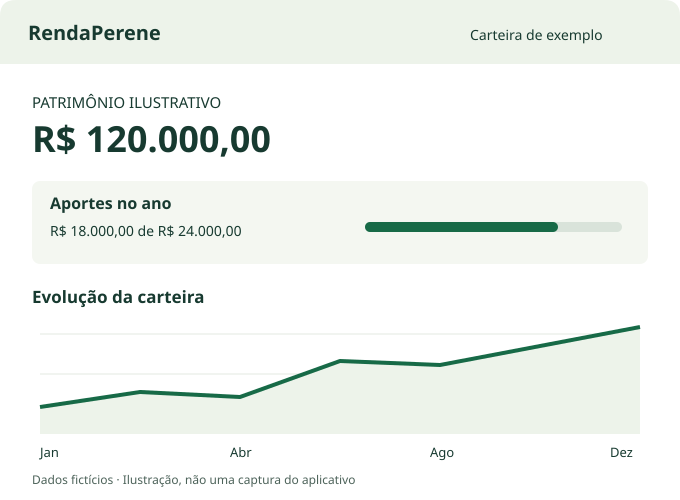

Conheça sua carteira
Veja posições, preço médio, proventos recebidos, gráficos e movimentações. Mantenha carteiras distintas para organizar seus registros.
Carteira B3 · Planejamento de aposentadoria
Organize investimentos, acompanhe proventos e transforme seus planos de aposentadoria em metas. Com seus registros no seu computador.
Windows e Ubuntu · Código aberto · Interface em português

Do registro ao planejamento
Veja posições, preço médio, proventos recebidos, gráficos e movimentações. Mantenha carteiras distintas para organizar seus registros.
Lance compras, vendas e proventos ou importe o arquivo oficial da B3. Revise divergências e custos pendentes sem acessar o portal da B3 pelo aplicativo.
Simule o aporte mensal necessário, acompanhe metas anuais de cotas e explore projeções conforme os parâmetros do seu plano.
Consulte preços, histórico de dividendos e referências de valuation pelo método de Bazin. Informações e projeções apoiam sua análise, sem recomendar investimentos.
Controle dos seus registros
O RendaPerene abre no navegador do próprio computador. Carteiras e planejamento ficam em bancos SQLite locais, sem conta obrigatória do RendaPerene.
As consultas de mercado usam Yahoo Finance e Banco Central. A importação da B3 usa o arquivo que você fornece.
Backup local: pacotes .rpb criptografados por senha para guardar ou transferir por sua conta.
Google Drive opcional: conecte sua conta e autorize as carteiras desejadas. O aplicativo verifica alterações a cada 10 minutos enquanto a interface estiver aberta.
O Drive guarda pacotes .rpbc com o banco completo, usando a proteção padrão do Google, sem criptografia adicional do RendaPerene. O Google e quem receber acesso ao arquivo podem ler seu conteúdo.
Comece pelo que você já tem
Escolha o pacote do seu sistema na página de releases, siga as instruções e abra sua carteira. O uso local não depende de conectar uma conta Google; consultas de mercado e backup remoto precisam de internet.
O projeto é mantido por R-Mascarenhas. Para dúvidas, sugestões e relatos de problemas, use as issues do repositório.
As mensagens nesse canal são públicas. Não envie carteiras, planilhas pessoais, tokens ou outros dados financeiros e credenciais.